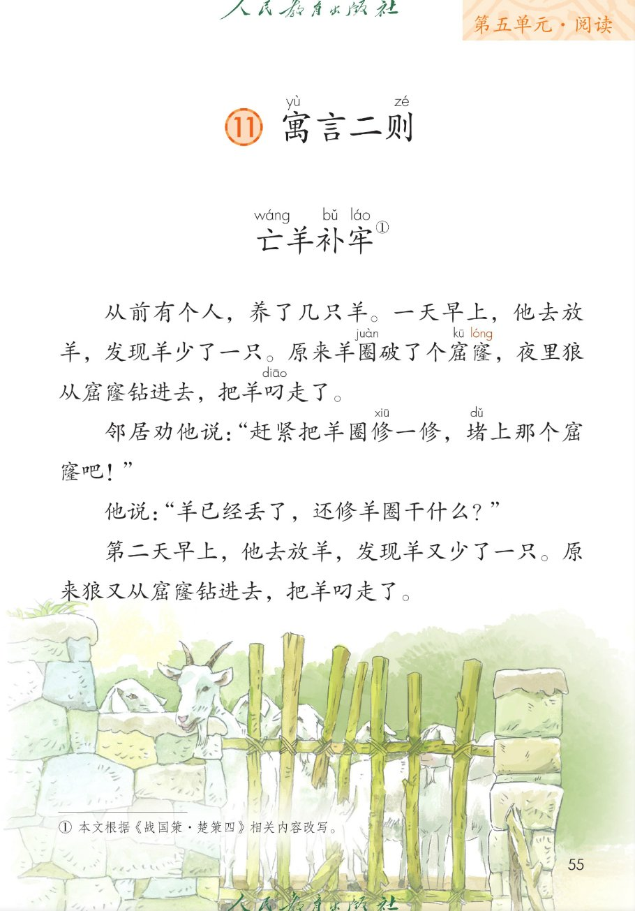
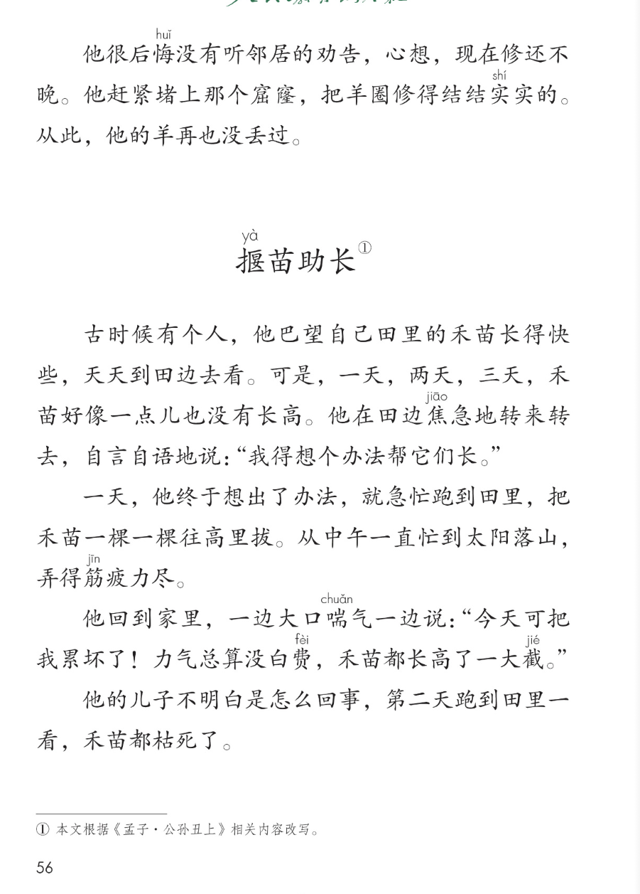
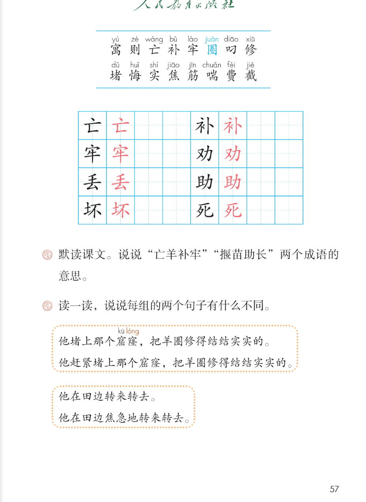

×
🔊 手机听不到声音怎么办？
① 先把手机
媒体音量调大 ，确认没开静音、没连蓝牙耳机；在微信里打开的，点右上角「⋯ → 用浏览器打开」。
② 还是没声音？到应用商店免费下载
Microsoft Edge 浏览器 （它自带朗读发声），用它打开本页面就能出声。
③ 换了 Edge 仍然没声音，说明这部手机的
硬件/系统不支持 网页朗读（多为老旧机型）；近几年买的新手机一般都能正常播放。
→ 打开声音自检
🐏 第 11 课《寓言二则》· 有声图文带读
统编版语文 · 第五单元·阅读 · 课本 第 55~57 页 · 亡羊补牢 / 揠苗助长
课文 2 则 · 9 段 · 共 17 句
会认字 16
会写字 8
听写词 10
近义词 4 组
深入理解 8 题
本课本领 默读·讲故事·明白道理
🎧 五步学（可随时点任意一句、一个字、一个词单独听）： ① 听读课文 ——两则寓言，一句一句读，读到哪一句哪一句发光；开「跟读」后读完一句留时间让你自己读。② 学字词 ——16 个会认字、8 个会写字（含书写提示），点一个读一个。③ 词语·听写·造句 ——先读词语积累，再听写 10 个词（读两遍→你写→报答案→听示范句），最后听 4 组近义词辨析。④ 深入理解 ——8 道题（认知 / 理解 / 运用 / 拓展），开放题答案不唯一，先想后看。⑤ 分节朗读·想象画面 ——按五步想象两则寓言的画面，再听九位朗读者分段读这两则寓言。
📚 第五单元·阅读（本课定位）： 第11课《寓言二则》 → （后续课文接用户提供的课本页序）
点段前的 ①~⑨ 听整段，点寓言标题听出处
🔁 跟读模式：关
👁 隐藏注音（自测用）
注音只标本课要认、要写的字和课本明确标了音的字（窟窿两字课本注了音），读音来自课本第 57 页生字表
🎤 朗读要求（老师标准） 寓 读第四声，则 读第二声，亡 读第二声，补 读第三声，牢 读第二声，圈 （羊圈）读第四声，叼 读第一声，悔 读第三声，实 （结实）读第二声，揠 读第四声，焦/筋/喘/费/截 分别读第一、一、三、四、二声；不添字、不漏字 ：逗号停得短，句号停得长，一句一句读清楚；读出人物的心情 ：养羊人不在乎，读得漫不经心；后悔时读得惭愧；修补羊圈读得果断。种田人巴望禾苗长，读得急切；拔苗时读得忙碌；禾苗枯死了，读得可惜；边读边想道理 ：两个故事各告诉我们什么道理，读完说一说。
亡wáng 羊补bǔ 牢láo ① 本文根据《战国策·楚策四》相关内容改写
①
从前有个人，养了几只羊。
一天早上，他去放羊，发现羊少了一只。
原来羊圈juàn 破了个窟kū 窿long ，夜里狼从窟kū 窿long 钻进去，把羊叼diāo 走了。
②
邻居劝quàn 他说："赶紧把羊圈juàn 修xiū 一修xiū ，堵dǔ 上那个窟kū 窿long 吧！"
③
他说："羊已经丢diū 了，还修xiū 羊圈juàn 干什么？"
④
第二天早上，他去放羊，发现羊又少了一只。
原来狼又从窟kū 窿long 钻进去，把羊叼diāo 走了。
⑤
他很后悔huǐ 没有听邻居的劝quàn 告，心想，现在修xiū 还不晚。
他赶紧堵dǔ 上那个窟kū 窿long ，把羊圈juàn 修xiū 得结结实shí 实shí 的。
从此，他的羊再也没丢diū 过。
揠yà 苗助zhù 长① 本文根据《孟子·公孙丑上》相关内容改写
⑥
古时候有个人，他巴望自己田里的禾苗长得快些，天天到田边去看。
可是，一天，两天，三天，禾苗好像一点儿也没有长高。
他在田边焦jiāo 急地转来转去，自言自语地说："我得想个办法帮它们长。"
⑦
一天，他终于想出了办法，就急忙跑到田里，把禾苗一棵一棵往高里拔。
从中午一直忙到太阳落山，弄得筋jīn 疲力尽。
⑧
他回到家里，一边大口喘chuǎn 气一边说："今天可把我累坏了！力气总算没白费fèi ，禾苗都长高了一大截jié 。"
⑨
他的儿子不明白是怎么回事，第二天跑到田里一看，禾苗都枯死sǐ 了。
🤔 想一想（点我可跳过）
点一张图，听读整页

第 55 页 · 课题与亡羊补牢

第 56 页 · 亡羊补牢结尾与揠苗助长

第 57 页 · 会认会写字与课后题
📖 人教版《语文》二年级下册 · 课本第 55~57 页 · 图片仅供个人学习，版权归人民教育出版社所有
点一个字，听读音、词语和课文里的句子
结构、部首、笔画与书写提示为通用规范，供参考，以教材和老师的指导为准
亡
wáng
亡羊补牢 · 死亡
3 画 · 独体（亡）
点在正中，竖折写稳
补
bǔ
修补 · 补丁
7 画 · 左右（衤）
左衣右卜，点要写正
牢
láo
牢记 · 牢固
7 画 · 上下（宀）
宝盖写宽，牛竖居中
劝
quàn
劝告 · 劝说
6 画 · 左右（力）
左又写小，右力撇展
丢
diū
丢失 · 丢掉
6 画 · 独体（丢）
上撇横短，下去写稳
助
zhù
帮助 · 互助
7 画 · 左右（力）
左且写扁，右力撇展
坏
huài
坏事 · 坏人
7 画 · 左右（土）
左土写窄，右不竖正
死
sǐ
枯死 · 生死
6 画 · 左右（歹）
左歹写窄，匕钩展开
点气泡，听课后题和句子对比
📖 课后题（课本第 57 页照录） ：① 默读课文。说说"亡羊补牢""揠苗助长"两个成语的意思。 ② 读一读，说说每组的两个句子有什么不同。赶紧 堵上那个窟窿，把羊圈修得结结实实的。焦急地 转来转去。
赶紧 赶紧 连忙
焦急 焦急 着急
筋疲力尽 筋疲力尽 有气无力
自言自语 自言自语 自己跟自己说
读两遍 → 你在纸上写 → 报答案 → 听示范句
准备听写 · 共 10 个词
○ ○ ○
点下面的「开始听写」，听到一个词就写一个词。
▶ 开始听写
🔁 再读一遍
👁 看答案
点词听读，点句子听示范句，再自己说一句
1 亡羊补牢 会写字 · 亡
示范句：亡羊补牢告诉我们，出了差错赶快补救，还不算晚。
✏️ 我也能说：用亡羊补牢说一句话
2 修补 会写字 · 补
示范句：他赶紧修补破了的羊圈。
✏️ 我也能说：谁 + 修补什么
3 牢固 会写字 · 牢
示范句：羊圈修得结结实实，很牢固。
✏️ 我也能说：什么 + 很牢固
4 劝告 会写字 · 劝
示范句：他很后悔没有听邻居的劝告。
✏️ 我也能说：谁 + 听谁的劝告
5 丢失 会写字 · 丢
示范句：养羊人丢了两次羊。
✏️ 我也能说：谁 + 丢失什么
6 帮助 会写字 · 助
示范句：同学有困难，我们要帮助他。
✏️ 我也能说：谁 + 帮助谁做什么
7 坏事 会写字 · 坏
示范句：把禾苗一棵棵拔高这件坏事，让禾苗都枯死了。
✏️ 我也能说：什么 + 是坏事
8 枯死 会写字 · 死
示范句：禾苗被拔离了根，最后都枯死了。
✏️ 我也能说：什么 + 枯死了
9 焦急 会认字 · 焦
示范句：他在田边焦急地转来转去。
✏️ 我也能说：谁 + 焦急地做什么
10 筋疲力尽 会认字 · 筋
示范句：他从中午忙到太阳落山，弄得筋疲力尽。
✏️ 我也能说：谁 + 忙得筋疲力尽
相同点 / 不一样在哪 / 各造一句
后悔 — 懊悔
相同：都表示事后心里责怪自己 。
不一样：后悔 和懊悔 意思很近，课文写养羊人很后悔没有听邻居的劝告。
后悔：我没听劝告，很后悔。
焦急 — 着急
相同：都表示心里急、坐立不安 。
不一样：焦急 比着急 更书面一点，课文写种田人在田边焦急地转来转去。
焦急：他焦急地等着消息。
巴望 — 盼望
相同：都表示希望、期望 。
不一样：巴望 带着急切的心情，课文写他巴望田里的禾苗长得快些；盼望 更常用。
巴望：他巴望禾苗快长。
赶紧 — 连忙
相同：都表示动作快、不拖延 。
不一样：赶紧 和连忙 意思很近，课文写他赶紧堵上那个窟窿。
赶紧：听说下雨，我赶紧收衣服。
AABB 式叠词 结结实实 高高兴兴
量词叠用 一棵一棵 一只一只
自言自语 自言自语地说：我得想个办法帮它们长
出自寓言的成语 亡羊补牢 揠苗助长
标「答案不唯一」的题，说得有道理都对
认知 《亡羊补牢》里，养羊人两次丢羊的原因是什么？他最后是怎么做的？看解析
🤔 想一想
解析：
羊圈破了窟窿，狼钻进来
第二次后悔了，赶紧修补
羊再也没丢过
认知 《揠苗助长》里，种田人做了一件什么蠢事？结果怎样？看解析
🤔 想一想
解析：
把禾苗一棵棵往高里拔
从中午忙到太阳落山
禾苗都枯死了
理解 亡羊补牢这个成语是什么意思？告诉我们什么道理？看解析
🤔 想一想
解析：
羊丢了赶快修羊圈
知错就改，补救不晚
还不晚
理解 揠苗助长这个成语是什么意思？告诉我们什么道理？看解析
🤔 想一想
解析：
拔高禾苗帮它长
不能急于求成
违反规律会做坏
理解 课后题读一读：他堵上那个窟窿和 他赶紧堵上那个窟窿，有什么不同？第二组呢？看解析
🤔 想一想
解析：
赶紧写出迫切
焦急地写出着急
词语能写出心情
运用 第二次丢羊后，养羊人见到邻居，他会怎么说？替他想一想，写下来。看解析
🤔 想一想
运用 用 赶紧 或 焦急地 说一句话。看解析
🤔 想一想
解析：
赶紧 或 焦急地
谁 + 怎么样
🌈 答案不唯一
拓展 生活中有没有像亡羊补牢或揠苗助长这样的事？举一个例子说一说。看解析
🤔 想一想
点一步，听这一步
1
养羊人丢羊
2
邻居劝告与后悔
3
修补羊圈
4
种田人拔苗
5
禾苗枯死的教训
💬 想象支架：先 想羊圈破窟窿丢羊 → 再 想邻居劝告和他的后悔 → 接着 想修补羊圈 → 然后 想拔苗的辛苦 → 最后 想禾苗枯死，说出两个道理。
点一张卡，听这一段的句子
🌈 第1段·朗读者
第1段：从前有个人，养了几只羊。
💬 养羊人丢羊，读得平静转惊讶
🌈 第2段·朗读者
第2段：邻居劝他说：赶紧把羊圈修一修，堵上那个窟窿吧！
💬 邻居劝告，读得诚恳
🌈 第3段·朗读者
第3段：他说：羊已经丢了，还修羊圈干什么？
💬 养羊人不在乎，读得漫不经心
🌈 第4段·朗读者
第4段：第二天早上，他去放羊，发现羊又少了一只。
💬 又丢羊，读得着急
🌈 第5段·朗读者
第5段：他很后悔没有听邻居的劝告，心想，现在修还不晚。
💬 后悔修补，读得惭愧到安心
🌈 第6段·朗读者
第6段：古时候有个人，他巴望自己田里的禾苗长得快些，天天到田边去看。
💬 巴望禾苗长，读得急切
🌈 第7段·朗读者
第7段：一天，他终于想出了办法，就急忙跑到田里，把禾苗一棵一棵往高里拔。
💬 拔苗辛苦，读得忙碌
🌈 第8段·朗读者
第8段：他回到家里，一边大口喘气一边说：今天可把我累坏了！力气总算没白费，禾苗都长高了一大截。
💬 喘气又得意，读得累又高兴
🌈 第9段·朗读者
第9段：他的儿子不明白是怎么回事，第二天跑到田里一看，禾苗都枯死了。
💬 禾苗枯死，读得可惜放慢